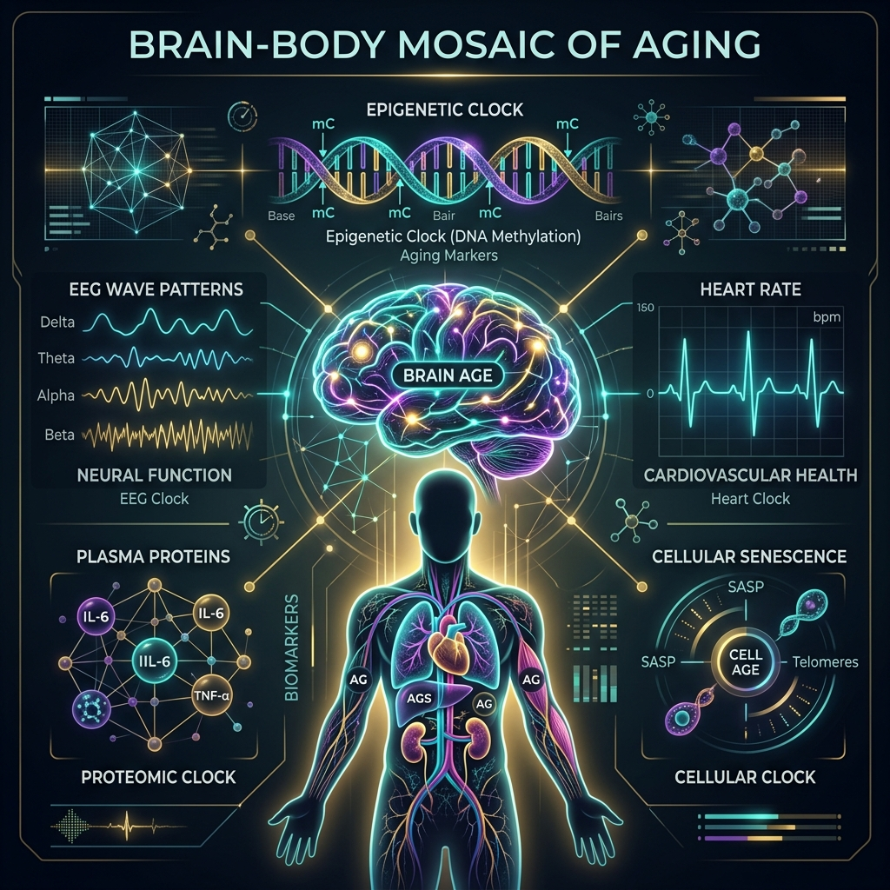

你的大腦幾歲了？從腦波、核磁共振到「老化馬賽克」，用系統生物學為身體解密
當日曆上的年齡只是數字，我們如何量化身體真實的衰老程度？本文將從結構 MRI、功能性 EEG、表觀遺傳鐘與血漿蛋白質體學，解讀「老化馬賽克假說」，並比較環境暴露體與人類表型體計畫如何協同改寫預防醫學的未來。

你一定聽過這樣的話：「某某人看起來比他的實際年齡年輕十歲！」或者相反地，「他最近老得特別快。」在醫學上，我們把日曆上的年齡稱為「曆法年齡（Chronological Age）」，而身體細胞與器官真實發育或衰退的狀態稱為「生物學年齡（Biological Age）」。
過去，我們很難精準測量這兩者之間的差距。但隨著神經影像學與機器學習的突破，科學家已經能用一台核磁共振（MRI）或甚至一頂簡單的腦波帽（EEG），在幾分鐘內推算出你大腦的「大腦年齡（Brain Age）」。當預測的大腦年齡大於你的實際年齡，這個差值（Brain-PAD）就代表大腦正在加速老化。
然而，大腦變老，就代表全身其他地方也以同樣的速度變老嗎？答案是：不一定。這正是近年預防醫學與抗老化領域最火熱的核心觀念——「老化馬賽克假說（Mosaic of Aging Hypothesis）」。
一、老化馬賽克：身體是不同步的老化拼圖
什麼是「老化馬賽克」？簡單來說，人體並不是像一塊均勻的鐵塊一樣整體生鏽。你的大腦、心臟、免疫系統、腎臟，甚至皮膚，都擁有自己獨立的老化時鐘和衰退斜率。這就像一幅馬賽克拼圖，每一塊馬賽克代表一個生理系統，它們老化的速度和軌跡可能截然不同。
在 James H. Cole 於 2018 年發表的一項經典世代研究中，科學家發現了一個驚人的事實：
在 669 位約 73 歲的老年人中，由大腦 MRI 計算出的「大腦年齡差距（Brain-PAD）」與由血液白血球計算出的「表觀遺傳鐘差距（DNAm-PAD）」幾乎沒有任何相關性（相關係數 $\rho = -0.007$, $p = 0.85$）。這意味著大腦結構加速老化的受試者，其免疫或造血細胞的表觀遺傳年齡不一定也加速老化。
這項發現徹底支持了「老化馬賽克」的觀點。如果我們只盯著某一個生物指標（例如只抽血看甲基化年齡，或者只做腦部影像），我們就會漏掉身體其他器官正在發出的警訊。但有趣的是，雖然這些老化鐘在生物學上是獨立的，但它們在臨床預測上卻具有強大的互補價值：
雙模態融合模型 (MRI + Epigenetics) 預測死亡率 AUC = 0.69
這告訴我們，將不同系統的「馬賽克拼圖」結合起來，才能對全身的衰老風險做出最精準的評估。
二、解密大腦年齡：當結構核磁共振（MRI）碰上功能腦波（EEG）
在評估大腦年齡時，目前主要有兩種技術光譜：
1. 結構性核磁共振（MRI）——大腦生長常模曲線
2022 年發表於《Nature》的指標性研究（Bethlehem et al.）彙整了全球超過 12 萬筆 MRI 數據，畫出了人類一生的「大腦生長與老化曲線」（常模圖 Centile Charts），這就像小兒科醫生評估嬰兒發育的身高體重曲線。透過非線性模型（GAMLSS），我們能知道個體的海馬迴或皮質厚度在同齡人中排在第幾個百分位數。如果偏離過大（如低於第 2 百分位），臨床上能非常敏銳地警示阿茲海默症（AD）等神經退化疾病。MRI 的優勢是空間解析度高，但缺點是成本昂貴且設備笨重。
2. 功能性腦波圖（EEG）——神經網路的即時交響樂
與靜態的 MRI 結構不同，EEG 捕捉的是大腦皮質神經元毫秒級的電活動（James & Burgess, 2025; Khayretdinova et al., 2022）。隨著年齡增長，大腦的背景雜訊會增加（信噪比下降），且神經網路的協調度會下降。最新的深度學習模型（如 DCNN）能直接從原始 EEG 訊號中提取時空特徵，推估出功能性的大腦年齡。EEG 的優點是便宜、非侵入性且具備高度臨床可及性，非常適合用來進行長期重複性的追蹤，看生活型態介入後大腦功能是否有好轉。
| 技術模態 | 測量標的 | 空間解析度 | 時間解析度 | 臨床優勢 | 主要限制 |
|---|---|---|---|---|---|
| 結構性 MRI | 灰質/白質體積、皮質厚度 | 毫米級 (極高) | 靜態 (無) | 精確描繪結構萎縮、定位特定脑區病變 | 設備昂貴、無法反映動態功能與網路連結 |
| 功能性 EEG | 神經元同步放電、頻譜功率與複雜度 | 低 (全域性) | 毫秒級 (極高) | 捕捉早期突觸與網路失衡、成本低、可重複追蹤 | 空間定位差、易受眨眼/肌肉電訊號干擾 |
三、暴露體 vs. 人類表型體：誰是解密馬賽克的鑰匙？
既然人體的老化是多系統、不同步的「馬賽克」，那我們要如何收集和分析這些龐雜的資訊？這就帶出了兩個二十一世紀系統醫學的核心科學計畫：
1. 環境暴露體（Exposome）——外在世界的累積印記
由 Christopher Wild 於 2005 年提出，暴露體是指一個人從受孕開始，一生中所經歷的所有非基因暴露的總和（Genon et al., 2026）。這包含物理環境（空氣污染、重金屬、微塑膠）、社會環境（工作壓力、社經地位、鄰里環境）以及生活型態（飲食、睡眠、運動）。暴露體強調「環境對身體的累積化學與物理印記」。
2. 人類表型體計畫（Human Phenome Initiative）——內在生理的深度監測
由系統生物學大師 Leroy Hood（《科學化健康時代》作者）大力倡導，表型體則是基因與環境交互作用後，生理表現出來的動態特徵總和。該計畫主張透過密集的「個人數據雲（Personal Data Clouds）」，縱向監測個體的基因體、表觀遺傳體、代謝組、腸道菌相與穿戴式裝置數據。表型體強調「內在生理網絡對外在刺激的動態響應」。
我們的研究數據顯示，外在環境的累積暴露負荷（PERS）並不是以簡單相加的方式破壞大腦。當 PERS 碰上特定的遺傳風險（如攜帶 APOE4 基因），兩者會產生強烈的非線性協同破壞作用（交互作用模型 $R^2 = 0.34$ 遠大於線性模型 $0.18$）。也就是說，高污染環境對 APOE4 攜帶者的大腦結構偏離具有加倍的破壞力。
四、精準抗老：血液中的「大腦監測哨兵」
在人類表型體計畫的深度生理監測中，血液中的蛋白質體學（Proteomics）正成為最具臨床轉譯價值的工具。最新研究發現，我們可以透過抽取血液，篩選出「特定器官專屬」的蛋白質衰老指標，作為該器官老化的即時監測哨兵：
- 腦特異性蛋白（p-Tau 217、NFL）：在臨床前階段，血液中 p-Tau 217 的異常升高能高度特異性地預測大腦 fronto-temporal 區域的皮質變薄（相關係數 $r = -0.64$, $p < 0.001$），而與視覺皮質（occipital）無關。
- 系統性發炎指標（hs-CRP、IL-6）：則與大腦結構的局部萎縮無顯著相關，但能高度預測大腦白質的神經纖維退化與血管性病變（白質信號高強度 CMD, $r = 0.52$）。
這再次印證了馬賽克老化的生物學機制：大腦的退化有兩條平行道路——一條是腦內局部澱粉樣蛋白/Tau蛋白毒性引發的局部結構萎縮，另一條則是全身慢性發炎引發的血管性神經損傷。這兩者在血液中各自有獨立的「哨兵」在看守著。
五、如何為你的老化馬賽克實施「科學化健康管理」？
理解了這些前沿科學，我們在日常生活中能做些什麼？這正是 Leroy Hood 倡導的「P4 醫學」（預測、預防、個人化、參與性）的核心實踐：
- 建立多維度的個人健康雲：不要只依賴年度常規健檢（那些參考值通常只代表「你還沒生病」，而不是「你很健康」）。結合穿戴式裝置（監測 HRV 自律神經活性、睡眠結構）與功能性評估。
- 實施系統性多模態介入（FINGER 模式）：面對複雜的慢性退化與老化，單一靶點的藥物效果極低。我們必須像修補屋頂的多處漏水一樣，同時從飲食結構（地中海/心腦健康飲食）、規律有氧與阻力運動、認知主動挑戰（學習新語言或樂器，促進神經可塑性）以及暴露體管理（減少空氣污染暴露、管理慢性發炎）下手。
- 個人化的 GxE 預防策略：如果你知道自己攜帶 APOE4 遺傳風險，你對環境暴露體（如重金屬、微塑膠、空氣污染）的容忍度就比一般人低。此時，實施更嚴格的外在毒素過濾、高品質睡眠（促進腦部膠淋巴系統清除廢物）便具有極高的預防槓桿效應。
曆法年齡是不可逆的，但透過系統生物學與人類表型體的精密羅盤，我們不僅能提早十年看見大腦與全身器官滑向疾病的「過渡期」裂痕，更有機會透過精準的多模態介入，重新配置我們體內的「老化馬賽克」，讓生物學年齡逆風上揚。
老化不是單一的倒數計時，而是一組多重節奏的馬賽克交響樂。只有當我們看清每一塊生理拼圖的步伐，才能在時間的河流中掌握掌舵的權力。
參考資料
- Cole JH, Franke K. Predicting age using neuroimaging: systematic review and meta-analysis. Trends in Neurosciences. 2017;40(12):681–690. doi:10.1016/j.tins.2017.10.001
- Cole JH, et al. Brain age predicts mortality. Molecular Psychiatry. 2018;23(5):1385–1392. doi:10.1038/mp.2017.62
- Bethlehem RAI, Cole JH, et al. Brain charts for the human lifespan. Nature. 2022;604(7906):525–533. doi:10.1038/s41586-022-04554-y
- Khayretdinova A, et al. Predicting age from resting-state scalp EEG signals with deep convolutional neural networks on TD-brain dataset. NeuroImage. 2022;252:119040. doi:10.1016/j.neuroimage.2022.119040
- James TM, Burgess AP. Estimating Chronological Age From the Electrical Activity of the Brain: How EEG-Age Can Be Used as a Marker of General Brain Functioning. Psychophysiology. 2025;62(3):e14725. doi:10.1111/psyp.14725
- Genon S, Ibanez A, Tahmasian M, Eickhoff SB. Linking the exposome to the brain–behaviour phenotype. Nature Reviews Neuroscience. 2026;27(1):15-29. doi:10.1038/s41583-026-01049-x
- Hood L, Price N. The Age of Scientific Wellness: Why the Future of Medicine Is Personalized, Predictive, Preventive, and Participatory. Harvard University Press; 2023.